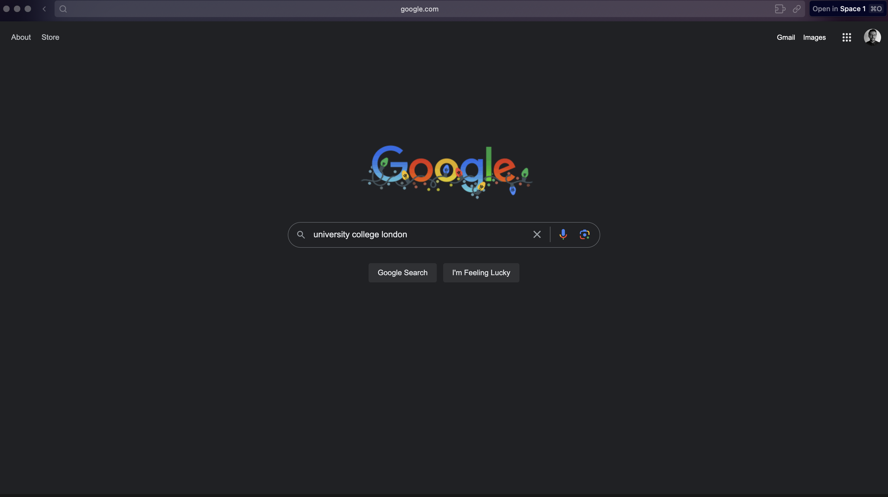
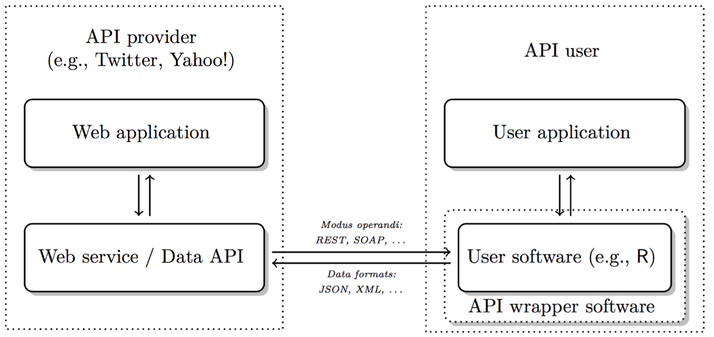
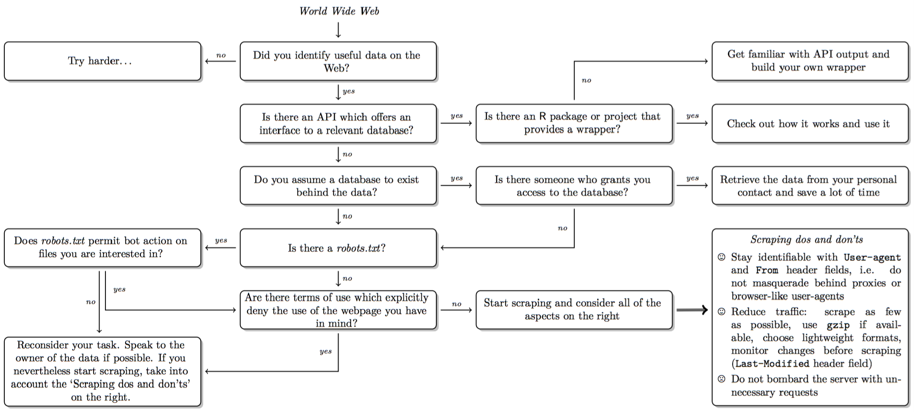
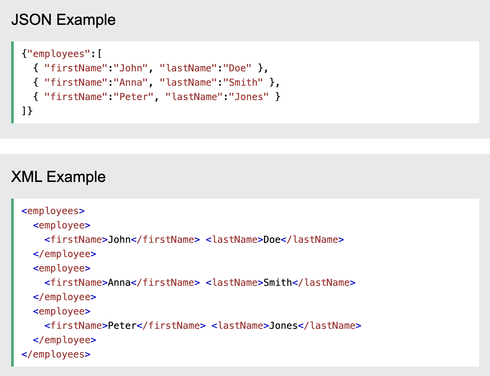
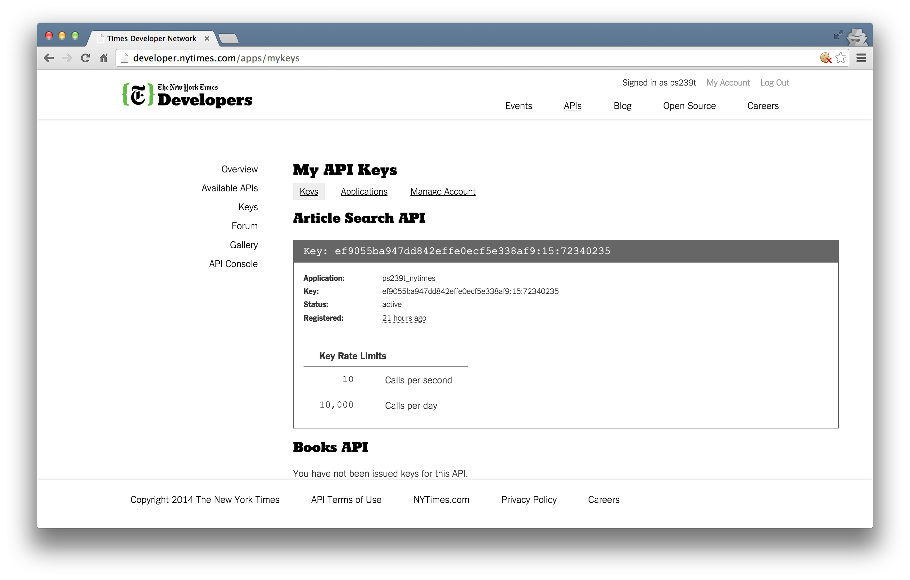
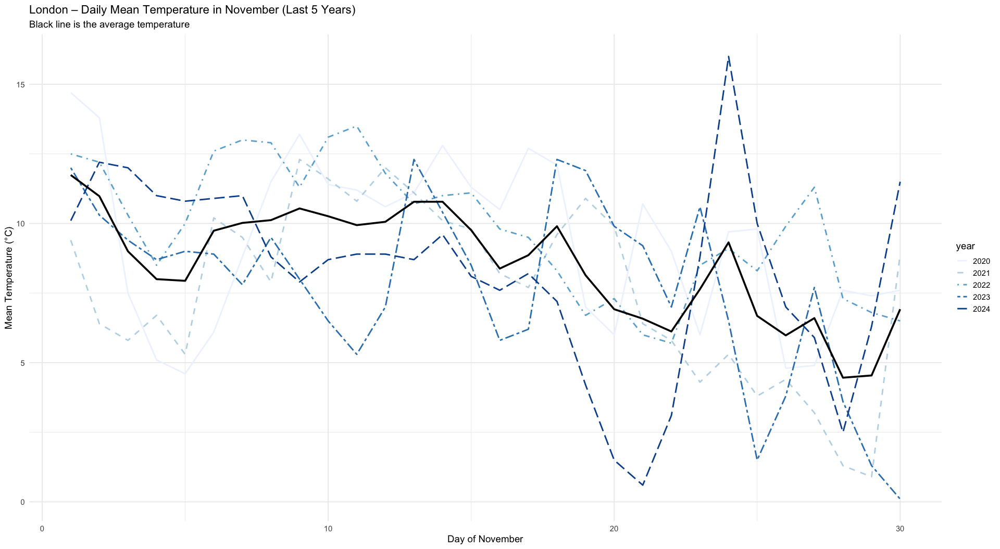
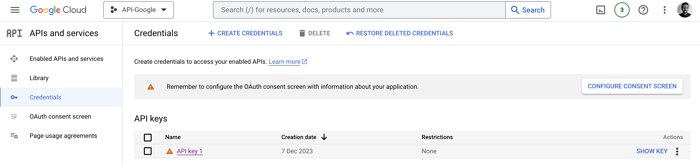
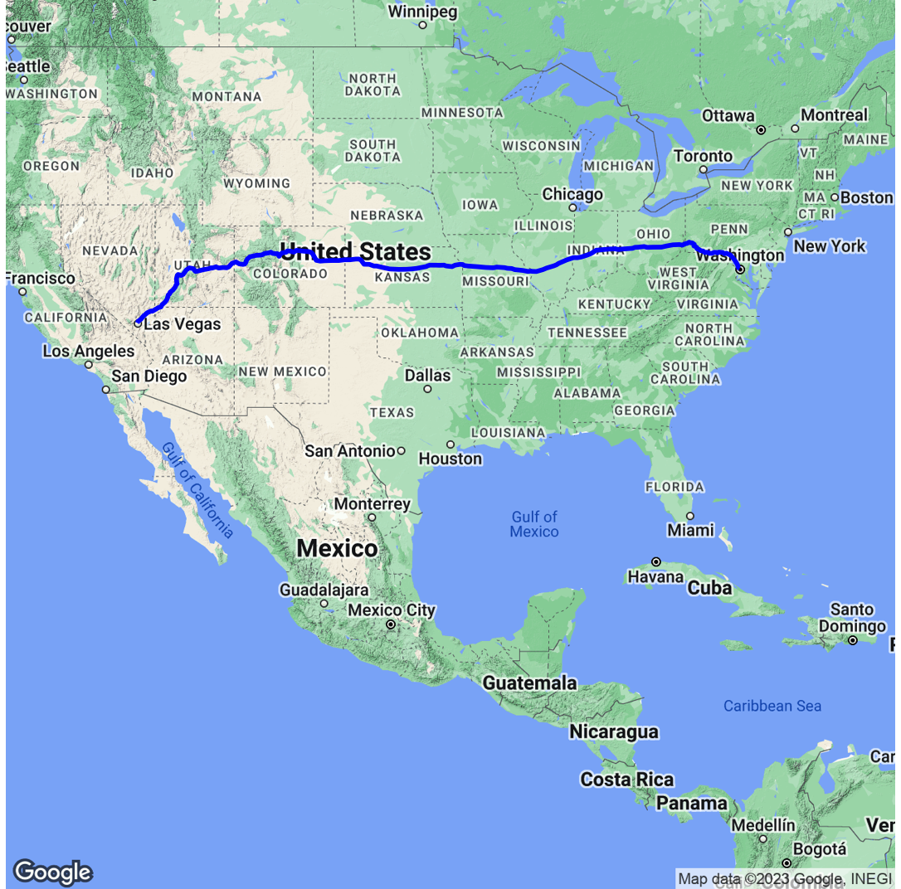
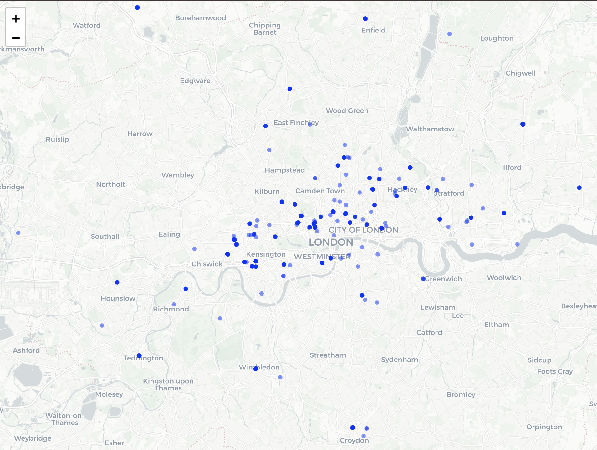

🗓️ Week 09
Working with APIs
Web APIs
What is an API?
- API stands for Application Programming Interface.
- a set of rules and procedures that facilitate interactions between computers and their applications
- A very common type of API is the Web API
- allows users to query a remote database over the internet
- Web APIs take on a variety of formats
- Representational State Transfer or REST
- we can use them to query databases using URLs
RESTful Web APIs
- They are all around you
- consider a simple Google search:

- Ever wonder what all that extra stuff in the address bar was all about?
- the full address is Google’s way of sending a query to its databases requesting information related to the search term “university college london”
Anatomy of API

- API = Application Programming Interface
- a set of structured http requests that return data in a lightweight format
- HTTP = Hypertext Transfer Protocol
- how browsers and e-mail clients communicate with servers
When or why we should use APIs
Advantages:
Pure data collection: avoid malformed HTML, no legal issues, clear data structures
Standardised data access procedures: transparency, replicability
Robustness: benefits from wisdom of the crowds
Disadvantages:
They’re not always available
Dependency on API providers
Lack of natural connection to R
Decision in scraping

Types of APIs
RESTful APIs: queries for static information at current moment (e.g. user profiles, posts, etc.)
Streaming APIs: real time data (e.g. new tweets, weather alerts)
APIs often have extensive documentation:
written for developers, what to look for: endpoints and parameters: API Documentation
most APIs are rate-limited: restrictions on number of API calls by user/IP address and period of time
commercial APIs may impose a monthly fee
List of APIs in case you need inspiration
Rate-limit your requests (sys.sleep() in loop
(Reponse) Formats: JSON
- Response often in JSON or XML format
- ‘http_type(#)’: Check format
- JSON (Javascript Object Notation, *.json)
- Structure: Data stored in key-value pairs. Why? Lightweight, more flexible than traditional table format
- various data types possible (strings, numbers etc.)
- curly brackets embrace objects; square brackets enclose arrays (vectors)
- objects ({“name”: “peter”,“phone”:“397483”})
- arrays ([1910, 1911])
- ‘jsonlite’ package: Use fromJSON function to read JSON data into R
- many packages have their own specific functions to read data in JSON format
(Reponse) Formats: XML
- XML (eXtensibleMarkupLanguage, *.xml)
- plain text format like JSON
- syntax of choice for many newly designed document formats (Word documents!)
- looks like HTML but has purpose to store data: Markup (mostly tags) & content
Json vs XML:

Getting API Access
Most APIs requires a key or other user credentials before you can query their database
Getting credentialised with a API requires that you register with the organization
Most APIs are set up for developers, so you will likely be asked to register an application
Once you have successfully registered, you will be assigned one or more keys, tokens, or other credentials that must be supplied to the server as part of any API call you make

Using APIs in R
There are two ways to collect data through APIs in R:
- Plug-n-play packages:
Many common APIs are available through user-written R Packages. These packages offer functions that “wrap” API queries and format the response. These packages are usually much more convenient than writing our own query
- Writing our own API request
If no wrapper function is available, we have to write our own API request and format the response ourselves using R. This is trickier, but definitely doable
Web API Examples
Collecting Weather Data Through an API
Setup:
library(pacman)
pacman::p_load(httr, jsonlite, dplyr, ggplot2, purrr)- The data is provided by the Open-Meteo Weather API
- Completely free and no API key required
- Provides historical and forecast weather data
- Includes variables like temperature, wind, precipitation, humidity, etc.
- Output is clean and easy to load into R (jsonlite, dplyr)
- Works globally for any set of latitude/longitude coordinates
Weather API Data - What kind of data do we get?
Daily or hourly weather variables
Values are numerical and time-stamped → ideal for time-series analysis
temperature_2m_mean Average air temperature at 2 metres above ground (°C) temperature_2m_max Daily maximum air temperature (°C) rain_sum Total rainfall only (mm) sunshine_duration Minutes of direct sunlight per day (minutes)
API access in R
- Downloading November daily mean temp for London
get_nov <- function(year) {
url <- "https://archive-api.open-meteo.com/v1/era5"
q <- list(
latitude = 51.5074, longitude = -0.1278,
start_date = sprintf("%d-11-01", year),
end_date = sprintf("%d-11-30", year),
daily = "temperature_2m_mean",
timezone = "Europe/London"
)
dat <- fromJSON(content(GET(url, query = q), "text"))$daily
tibble(
day = as.integer(substr(dat$time, 9, 10)),
tmean = dat$temperature_2m_mean,
year = factor(year)
)
}Using httr Package
- Visualising daily mean temperature (last 5 years-November)

# Pick last 4 *complete* Novembers
this_year <- as.integer(format(Sys.Date(), "%Y"))
years <- (this_year - 5):(this_year - 1)
nov <- map_dfr(years, get_nov)
# Plot
ggplot(nov, aes(day, tmean, colour = year, linetype = year)) +
geom_line(linewidth = 1) +
stat_summary(
fun = mean, geom = "line",
aes(group = 1),
colour = "black", linewidth = 1.3,
show.legend = FALSE
) +
scale_colour_brewer(palette = "Blues") +
scale_linetype_manual(values = c("solid","dashed","dotdash","twodash","longdash")) +
labs(
title = "London – Daily Mean Temperature in November (Last 5 Years)",
subtitle = "Black line is the average temperature",
x = "Day of November", y = "Mean Temperature (°C)"
) +
theme_minimal(base_size = 14)Using Google Maps API
ggmapuses Google Maps behind the scenes, so you’ll need an active Google Cloud Platform account (see here if you cannot figure out)- enable the following APIs under APIs and Services – Library:
- Maps JavaScript API
- Maps Static API
- Geocoding API
- enable the following APIs under APIs and Services – Library:

How to use ggmap with Google Maps API
#Authorisation with API Key
key <-"yourAPIkey"
register_google(key = key)
#Drawing the route
route_data <- trek("washington", "las vegas", structure = "route")
head(route_data)
#Mapping
qmap(zoom = 4) +
geom_path(
aes(x = lon, y = lat), color = "blue", size = 1, data = route_data
)
Using OpenStreetMap API
OpenstreetMap (OSM) is a free and open map of the world created largely by voluntary contribution of millions of people around the world
OSM serves two APIs, namely Main API for editing OSM, and Overpass API for providing OSM data
OSM data is stored as a list of attributes tagged in key - value pairs of geospatial objects (points, lines or polygons)
For example, for charities, the key is “office”, and the value is “charity”
- access an extensive list of key-value pairs through OSM Wiki Map features
Mapping charities in London through OSM
#Setup
pacman::p_load('osmdata', 'sf', 'tidyverse', 'leaflet') The first step is to define a bounding box of the geographical area we are interested in. It is defined by four geographic coordinates, representing the minimum and maximum latitude and longitude of the area
bb <- getbb ("london uk")
london_rst <- opq(bb) %>% #gets bounding box
add_osm_feature(key = "office", value = "charity") %>% #searches for charities
osmdata_sf() #download OSM data as sf (simple features -- spatial data format in R)Looking into the osmdata object
- In osm_points and osm_polygons you see various information related to charities. It’s because the information about restaurants are entered either as restaurants and polygons
head(london_rst$osm_polygons)$name
#select name and geometry for charities
rst_osm_points <- london_rst$osm_points %>% #select point data from downloaded OSM data
select(name, geometry) #for now just selecting the name and geometry to plot
rst_osm_polygons <- london_rst$osm_polygons %>%
select(name, geometry)
london_charities <- rbind(rst_osm_points, rst_osm_polygons)- OpenStreetMap found 729 observations as charities
Visualising locations of charities
leaflet() %>%
addPolygons(
data = london_rst$osm_polygons,
label = london_rst$osm_polygons$name
) %>%
addCircles(
data = london_rst$osm_points,
label = london_rst$osm_points$name
) %>%
addProviderTiles("CartoDB.Positron")
Lab exercise and further materials
- Visualise location of pubs in Greater London, using OpenStreetMap API
Further texts:
Bonus Tutorial: Spotify API: